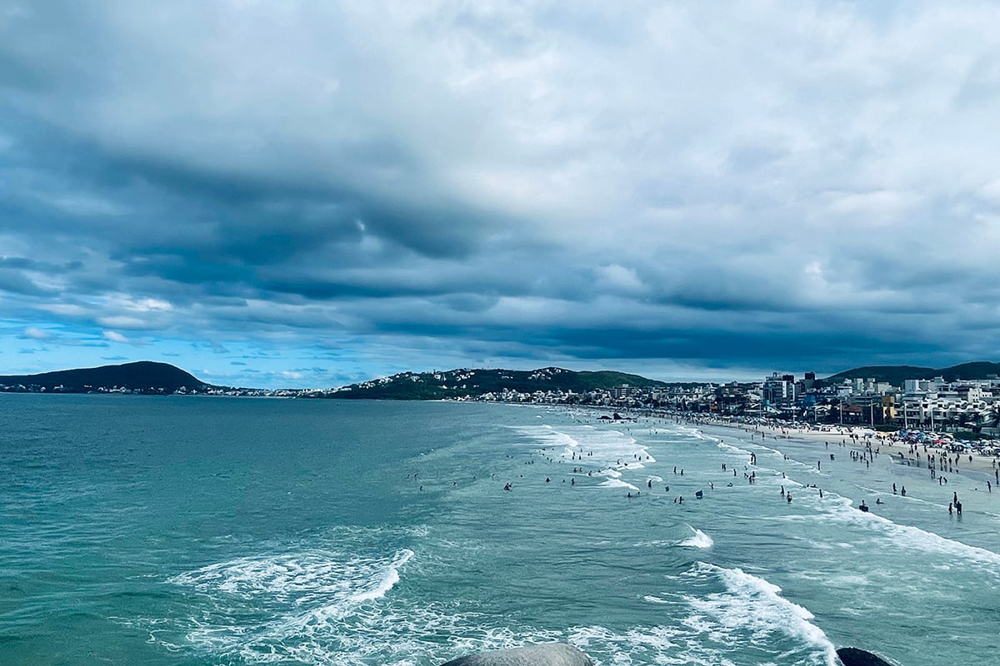
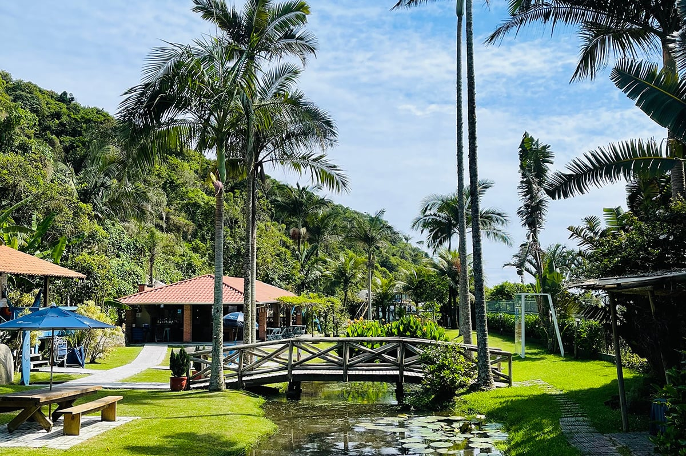

La devaluación en Brasil, ¿oportunidad o alerta?
Kit para entender y aprovechar
Kit para entender y aprovechar

Vamos a hablar de un tema que parece “fome” y capaz, muy elevado en ciertos ámbitos, pero que a decir verdad es algo que transitamos a lo largo de nuestras vidas y es la devaluación. Que si bien Chile en estos momentos no tiene ese fenómeno latente, si ha ocurrido en Argentina y actualmente en Brasil.
¿Quién no se ha cruzado la frontera para aprovechar precios? Es algo que nos encanta y para que no piensen que es algo que solo sucede en Latinoamérica, hace poco hablé con una española que vive en Suiza, más precisamente en Lausana. Ella está muy cerca de la frontera con Francia y ¿saben qué me dijo? Va a supermercado al país vecino, pues el jabón para lavar la ropa es sorprendentemente más barato allí que en la tierra de los relojes y el chocolate.
Pero volviendo al sur de América y con varios kilómetros más entre los países, vemos que esto sucede igual. Si bien el caso de Suiza y Francia no es por devaluaciones, sino más precisamente por buscar el precio más conveniente, lo que tira a las personas es ahorrar un poco, ¿para qué? Para darse gustos, volver a viajar, salir a comer, quién sabe que hace la gente con lo que ahorra, pero que los busca encontrar es más que cierto.

Por si no sabían a nosotros en Compara nos encanta ahorrar y si podemos pasarles tips de como hacerlo, más que felices.
Enviamos a un corresponsal (mentira, ya tenía planeadas las vacaciones) y nos hizo una comparativa de precios IN CRE I BLE:
Contexto de esta información, fue hace un tiempo y se centró en la zona de Río de Janeiro, ahora si continúe su lectura:
🏠 Hospedaje: Tanto en Búzios como en Río el hospedaje era mucho más barato que en Chile. Alojamos en hostales, departamentos y en una "pousada" con pieza y baño privado. Por ejemplo, en el departamento que nos hospedamos en Río, nos salió 120.000 CLP por 3 noches y era para 5 personas (aunque nosotros éramos 3). En Chile un departamento por noche te sale entre 60.000 y 80.000 CLP y es solo para 2 personas.
🥗Comida: La verdad es que aquí fue una de las mejores partes, la mayoría de las veces íbamos a comer en buffet, donde salía entre 35 y 50 reales por personas (hay más caros también obviamente) y podíamos comer todo lo que queríamos. Considerando que nosotros hicimos el cambio a reales por 166 pesos, los buffets salían entre 5.800 y 8.300 CLP por persona. Acá en Chile un buffet te sale entre 15.000 y 20.000 CLP por persona.
🚙 Transporte: La mejor opción siempre era tomar Uber, era baratísimo. Lo mejor es moverse por ese medio, sobre todo cuando se viaja entre 2 o más personas porque se reparte entre todos.
🛶 Tour: La mayoría los hacíamos por nuestra cuenta, aquí puede ser un poquito más caro porque los precios de los atractivos turísticos, sobre todo en Río, era más caros. Las entradas eran lo más elevado que pagábamos en Brasil (Aqua Río, Cristo, Pan de Azúcar). No contratamos muchos tours, así que no sabría decirte qué tal con los precios ahí. Aunque la mayoría de las veces uno puede ir a los lugares por cuenta propia.
Además de estos datos, también les dejamos un contenido de por qué viajar a Brasil, con una guía para Chilenos.
Por último, y no menos importante, nos faltó recomendar nuestras Asistencias en Viaje, dicen que hay una peste que si tomas agua del mar sin querer luego te vas por el WC. Estás avisado.
Ahora si volviendo al punto del principio, antes del ahorro, ¿es la devaluación una oportunidad para los consumidores o un síntoma preocupante de la fragilidad económica regional? Quizás sea ambas cosas a la vez. Lo que queda claro es que esta dinámica pone de manifiesto la necesidad de una mayor integración y cooperación entre los países de la región. Al final del día, lo que sucede en Brasil, Argentina o Chile no ocurre en aislamiento, sino como parte de un entramado económico y social que nos conecta a todos.
Nos leemos en el próximo blog.
 Finanzas
FinanzasSi últimamente has abierto LinkedIn, probablemente lo has visto: parece que todos hablan del “futuro del trabajo”.
 Finanzas
FinanzasChile no está en el Mundial 2026. Ya lo sabemos, ya dolió, ya hicimos memes tristes y nos resignamos a ver la Copa del Mundo desde la casa.
 Finanzas
FinanzasHace casi dos años me vine a vivir a Italia y llegué con una idea muy instalada en la cabeza: que todo iba a ser mucho más caro que en…